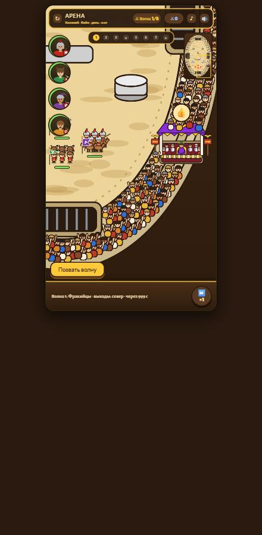
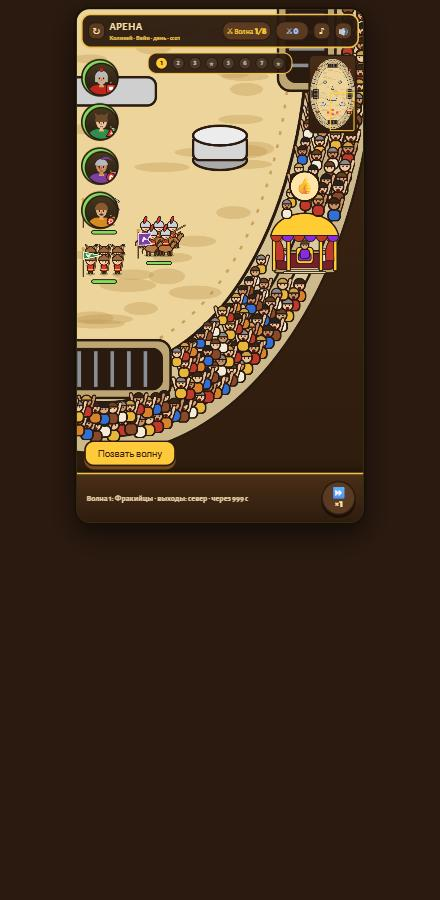
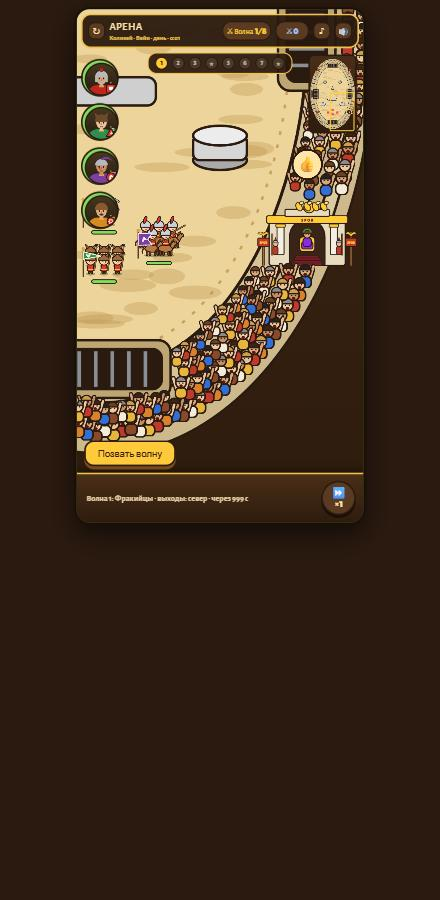
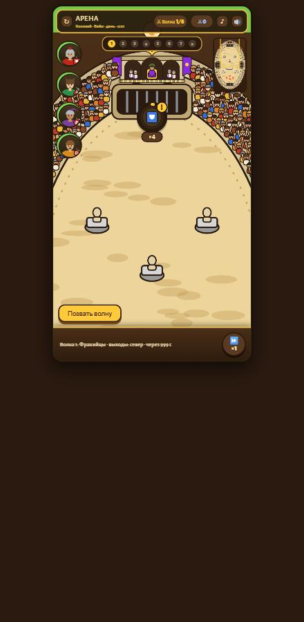

Четыре варианта, снятых прямо в игре (Вейи, крик толпы на максимуме, над ложей видна рука императора «палец вверх»). Переключение в игре: ?box=A, B, C или D в адресе citywar.html.

А · ПульвинарМраморный подиум, колонны, фиолетовый навес с орлом, император на золотом троне, четыре сенатора, два стражника, знамёна SPQR.

Б · ПавильонЗолотой купол на колоннах с красными драпировками, император на троне, двое слуг с опахалами. Самая «восточная» и лёгкая по силуэту.

В · Триумфальная аркаБелая арка с надписью SPQR и золотой квадригой наверху, император в проёме на ступенях. Самая заметная и «римская».

Г · Балкон над воротамиТри арки в стене над северными воротами, император в центральной, знамёна по сторонам. Строго по оси арены, виден с любого места.